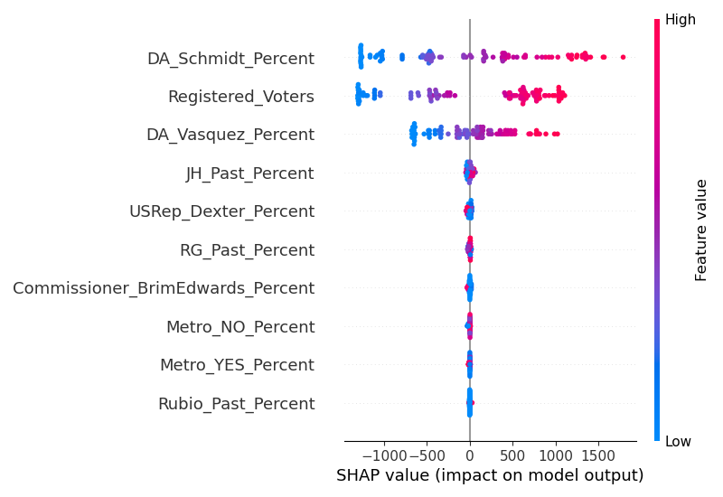

Forecasting Precinct-Level Vote Totals for the Upcoming Portland Mayoral Election
Abstract
This blog post presents a predictive analysis aimed at forecasting precinct-level vote totals in the upcoming Portland mayoral race between Rene Gonzalez and Carmen Rubio. Utilizing historical electoral data and advanced machine learning techniques—specifically, a Gradient Boosting Regressor—we develop a model to predict voter turnout and candidate support. The analysis provides insights into the factors influencing electoral behavior and offers detailed interpretations of the model's predictions.
1. Introduction
Accurate forecasting of electoral outcomes at the precinct level is invaluable for campaign strategists, political analysts, and policymakers. It enables targeted campaigning, efficient resource allocation, and a deeper understanding of voter behavior patterns. This study focuses on the upcoming Portland mayoral election, featuring candidates Rene Gonzalez and Carmen Rubio. By leveraging historical election data and sophisticated machine learning models, we aim to predict voter turnout and candidate support at a granular precinct level.
2. Data Sources
Three primary datasets were utilized in this analysis:
- 2022 Rene Gonzalez vs. Jo Ann Hardesty Election Data
- Contains precinct-level voting results from the previous mayoral race.
- Includes total votes, votes for each candidate, vote percentages, and write-in votes.
- 2020 Carmen Rubio Election Data
- Provides precinct-level data from Carmen Rubio's previous election.
- Includes the number of votes she received and the total ballots cast per precinct.
- Additional Electoral Data
- Includes results from other relevant races and measures.
- District Attorney race (Mike Schmidt vs. Nathan Vasquez).
- Metro measure voting percentages (Yes and No votes).
- Multnomah County Commissioner race (Julia Brim-Edwards).
- U.S. Representative race (Maxine E. Dexter).
3. Methodology
3.1 Data Preprocessing
Data preprocessing involved loading and merging datasets, handling missing values, and converting data types:
- Data Loading: All datasets were loaded using pandas DataFrames for efficient data manipulation.
- Column Selection and Renaming: Relevant columns were selected, and columns with special characters or spaces were renamed for consistency and ease of use.
- Data Merging: The datasets were merged on the
Precinctcolumn using an outer join to ensure all precincts were included. - Handling Missing Values: Numerical columns with missing values were filled with zeros.
- Data Type Conversion: All numerical features and percentage columns were converted to appropriate numeric data types.
3.2 Feature Engineering
New features were created to enhance the model's predictive capabilities:
- Registered Voters: Derived from the
Registered_column. - Past Performance Percentages: Calculated for each candidate and measure (e.g.,
RG_Past_Percent,Rubio_Past_Percent).
3.3 Model Training and Evaluation
The model training process involved several key steps:
- Feature Scaling: Used
StandardScalerto standardize features. - Data Splitting: Split the data into training and testing sets using an 80/20 split.
- Model Selection: Employed a Gradient Boosting Regressor for its robustness.
- Model Evaluation: Evaluated using Mean Squared Error (MSE) and R-squared metrics. Cross-validation was also performed.
4. Results
4.1 Model Performance
The model demonstrated strong predictive capabilities:
- Mean Squared Error (MSE): 225,813.56
- R-squared (R²): 0.85
- Cross-Validated R² Score: Average of 0.82 across five folds
4.2 Feature Importance
The analysis revealed the following insights:
- Registered_Voters: Most significant predictor of total votes.
- DA_Schmidt_Percent: High support for Mike Schmidt is associated with higher voter turnout.
- Other Influential Features: Past vote percentages for candidates and measures also contribute meaningfully.
Feature Importance Plot

4.3 Precinct-Level Predictions
The top precincts by predicted total votes are as follows:
| Precinct | Registered Voters | Predicted Total Votes | Carmen Votes | Rene Votes | SHAP Values | Interpretation |
|---|
4.4 SHAP Value Analysis
SHAP values were used to understand feature contributions at the precinct level:
- Precinct 4501: Prediction influenced most by
DA_Schmidt_PercentandRegistered_Voters. - Precinct 2805: Similar influences observed.
- Precinct 4502: Consistent patterns with top features impacting predictions.
SHAP Summary Plot
5. Interpretation
5.1 Key Findings
- Influence of Registered Voters: Primary driver of total votes.
- Impact of Past Support for Mike Schmidt: Correlation with higher voter turnout.
- Candidate-Specific Insights: Carmen Rubio's past performance is a strong indicator of future support.
5.2 Implications for Campaign Strategies
These insights suggest targeted areas where campaign efforts could be concentrated to maximize voter engagement and support:
- Focus on precincts with high numbers of registered voters.
- Leverage areas with strong past support for aligned candidates.
- Tailor messaging to resonate with precinct-specific concerns.
6. Conclusion
This analysis provides a comprehensive forecast of precinct-level vote totals for the upcoming Portland mayoral election. By integrating historical election data with advanced machine learning techniques, we have identified key factors influencing voter turnout and candidate support. The findings offer valuable insights for campaign strategists and contribute to a deeper understanding of electoral dynamics in Portland.
Appendix
A. Code Implementation
# Import necessary libraries
import pandas as pd
import numpy as np
# For model training and evaluation
from sklearn.model_selection import train_test_split, cross_val_score
from sklearn.ensemble import GradientBoostingRegressor
from sklearn.preprocessing import StandardScaler
from sklearn.metrics import mean_squared_error, r2_score
# For explanations and visualizations
import shap
import matplotlib.pyplot as plt
# Load the datasets
rg_jh_data = pd.read_csv()
rubio_data = pd.read_csv()
additional_data = pd.read_csv()
# Preprocess the data
# For rg_jh_data
rg_jh_columns = [
'Precinct', 'Total Votes',
'RG_Votes', 'RG_Percent', 'JH_Votes', 'JH_Percent', 'Write_in'
]
rg_jh_data = rg_jh_data[rg_jh_columns]
# For rubio_data
rubio_columns = [
'Precinct', 'Total_Votes', 'Votes'
]
rubio_data = rubio_data[rubio_columns]
# Rename 'Votes' to 'Rubio_Votes' for clarity
rubio_data.rename(columns={
'Votes': 'Rubio_Votes'
}, inplace=True)
# Convert 'Rubio_Votes' and 'Total_Votes' to numeric, handling errors
rubio_data['Rubio_Votes'] = pd.to_numeric(rubio_data['Rubio_Votes'], errors='coerce')
rubio_data['Total_Votes'] = pd.to_numeric(rubio_data['Total_Votes'], errors='coerce')
# Calculate Rubio's vote percentage
rubio_data['Rubio_Percent'] = rubio_data['Rubio_Votes'] / rubio_data['Total_Votes']
rubio_data['Rubio_Percent'] = rubio_data['Rubio_Percent'].fillna(0)
# For additional_data (replacing may_primary_data)
additional_columns = [
'Precinct', 'Registered_',
'District Attorney, Multnomah County (Vote for 1)_Mike Schmidt',
'District Attorney, Multnomah County (Vote for 1)_Nathan Vasquez',
'Percent Metro NO',
'Percent Metro YES',
'Multnomah County Commissioner, District 3 (Vote for 1)_Julia Brim-Edwards',
'US Representative, 3rd District (DEM) (Vote for 1)_Maxine E Dexter'
]
additional_data = additional_data[additional_columns]
additional_data.rename(columns={
'District Attorney, Multnomah County (Vote for 1)_Mike Schmidt': 'DA_Schmidt',
'District Attorney, Multnomah County (Vote for 1)_Nathan Vasquez': 'DA_Vasquez',
'Percent Metro NO': 'Metro_NO_Percent',
'Percent Metro YES': 'Metro_YES_Percent',
'Multnomah County Commissioner, District 3 (Vote for 1)_Julia Brim-Edwards': 'Commissioner_BrimEdwards',
'US Representative, 3rd District (DEM) (Vote for 1)_Maxine E Dexter': 'USRep_Dexter'
}, inplace=True)
# Convert percentage columns to numeric
percentage_columns = [
'DA_Schmidt', 'DA_Vasquez',
'Metro_NO_Percent', 'Metro_YES_Percent',
'Commissioner_BrimEdwards', 'USRep_Dexter'
]
for col in percentage_columns:
additional_data[col] = pd.to_numeric(additional_data[col], errors='coerce')
# Handle missing values in percentage columns
additional_data[percentage_columns] = additional_data[percentage_columns].fillna(0)
# Merge datasets on 'Precinct'
data = rg_jh_data.merge(
rubio_data[['Precinct', 'Rubio_Percent']], on='Precinct', how='left'
)
data = data.merge(
additional_data, on='Precinct', how='left'
)
# Handle missing values by filling with zeros
data.fillna(0, inplace=True)
# Feature Engineering
# Create 'Registered_Voters' and 'Total_Votes' columns
data['Registered_Voters'] = data['Registered_']
data['Total_Votes'] = data['Total Votes']
# Include past performance features
data['RG_Past_Percent'] = data['RG_Percent']
data['JH_Past_Percent'] = data['JH_Percent']
data['Rubio_Past_Percent'] = data['Rubio_Percent']
data['DA_Schmidt_Percent'] = data['DA_Schmidt']
data['DA_Vasquez_Percent'] = data['DA_Vasquez']
data['Metro_NO_Percent'] = data['Metro_NO_Percent']
data['Metro_YES_Percent'] = data['Metro_YES_Percent']
data['Commissioner_BrimEdwards_Percent'] = data['Commissioner_BrimEdwards']
data['USRep_Dexter_Percent'] = data['USRep_Dexter']
# Replace any remaining NaN or infinite values with zeros
data.replace([np.inf, -np.inf], np.nan, inplace=True)
data.fillna(0, inplace=True)
# Prepare the feature matrix X and target variable y
# Define features to be used in the model
features = [
'Registered_Voters',
'RG_Past_Percent',
'JH_Past_Percent',
'Rubio_Past_Percent',
'DA_Schmidt_Percent',
'DA_Vasquez_Percent',
'Metro_NO_Percent',
'Metro_YES_Percent',
'Commissioner_BrimEdwards_Percent',
'USRep_Dexter_Percent'
]
X = data[features]
y = data['Total_Votes']
# Scale features for better model performance
scaler = StandardScaler()
X_scaled = scaler.fit_transform(X)
# Split the data into training and testing sets (80% train, 20% test)
X_train, X_test, y_train, y_test = train_test_split(
X_scaled, y, test_size=0.2, random_state=42
)
# Create and train the regression model
model = GradientBoostingRegressor(random_state=42)
model.fit(X_train, y_train)
# Evaluate the model on the test set
y_pred = model.predict(X_test)
y_pred = np.maximum(y_pred, 0) # Ensure no negative predictions
# Calculate evaluation metrics
mse = mean_squared_error(y_test, y_pred)
r2 = r2_score(y_test, y_pred)
print(f'Model Evaluation:\nMSE: {mse:.2f}\nR²: {r2:.2f}')
# Perform cross-validation for more robust evaluation
scores = cross_val_score(model, X_scaled, y, cv=5, scoring='r2')
print(f'Cross-validated R² scores: {scores}')
print(f'Average R² score: {scores.mean():.2f}')
# Feature Importances
# Get feature importances from the model
importances = model.feature_importances_
feature_importance_df = pd.DataFrame({
'Feature': features,
'Importance': importances
}).sort_values(by='Importance', ascending=False)
print("\nFeature Importances:")
print(feature_importance_df)
# Plot Feature Importances
plt.figure(figsize=(8,6))
plt.barh(feature_importance_df['Feature'], feature_importance_df['Importance'], color='skyblue')
plt.gca().invert_yaxis() # Highest importance on top
plt.xlabel('Importance')
plt.title('Feature Importances')
plt.tight_layout()
plt.show()
# Forecast total votes per precinct in the upcoming race
data['Predicted_Total_Votes'] = np.maximum(model.predict(X_scaled), 0).round().astype(int)
# Assume Carmen Rubio's vote percentage is similar to her past percentage
data['Predicted_Carmen_Percent'] = data['Rubio_Past_Percent']
# If Rubio_Past_Percent is zero, use JH_Past_Percent as a proxy
data.loc[data['Predicted_Carmen_Percent'] == 0, 'Predicted_Carmen_Percent'] = data['JH_Past_Percent']
# Handle cases where percentages are still zero by using the average
avg_percent = data['Predicted_Carmen_Percent'].mean()
data['Predicted_Carmen_Percent'] = data['Predicted_Carmen_Percent'].replace(0, avg_percent)
# Ensure percentages are within [0,1]
data['Predicted_Carmen_Percent'] = data['Predicted_Carmen_Percent'].clip(0, 1)
# Calculate predicted votes for Carmen Rubio and Rene Gonzalez
data['Carmen_Votes'] = (data['Predicted_Total_Votes'] * data['Predicted_Carmen_Percent']).round().astype(int)
data['Rene_Votes'] = data['Predicted_Total_Votes'] - data['Carmen_Votes']
# Use SHAP values to explain the model's predictions
# Note: SHAP can be computationally intensive
explainer = shap.Explainer(model, X_train)
shap_values = explainer(X_scaled)
# Add SHAP values to the data
data['SHAP_Values'] = shap_values.values.sum(axis=1)
# Prepare the final forecast DataFrame
forecast = data[[
'Precinct', 'Registered_Voters', 'Predicted_Total_Votes',
'Carmen_Votes', 'Rene_Votes', 'SHAP_Values'
]]
# Sort forecast by predicted total votes descending
forecast = forecast.sort_values(by='Predicted_Total_Votes', ascending=False)
# Display the forecasted vote totals per precinct
print("\nForecasted Vote Totals per Precinct:")
print(forecast.head(10))
# Save the forecast to a CSV file
forecast.to_csv('election_forecast.csv', index=False)
print("\nForecast saved to 'election_forecast.csv'")
# Generate explanations for each precinct
def interpret_precinct(row):
"""
Generate a textual interpretation of the prediction for a precinct.
"""
precinct = row['Precinct']
shap_value = row['SHAP_Values']
top_features_indices = np.argsort(np.abs(shap_values[row.name].values))[::-1][:2]
feature_names = [features[i] for i in top_features_indices]
explanations = f"Precinct {precinct} prediction influenced most by {feature_names[0]} and {feature_names[1]}."
return explanations
# Apply the interpretation function to each row
forecast['Interpretation'] = forecast.apply(interpret_precinct, axis=1)
# Display interpretations for top precincts
print("\nInterpretations for Top Precincts:")
print(forecast[['Precinct', 'Interpretation']].head(10))
# Save detailed forecast with interpretations
forecast.to_csv('election_forecast_detailed.csv', index=False)
print("\nDetailed forecast saved to 'election_forecast_detailed.csv'")
# Visualize SHAP summary plot (optional)
# Note: This can take time for large datasets
shap.summary_plot(shap_values, features=X, feature_names=features)